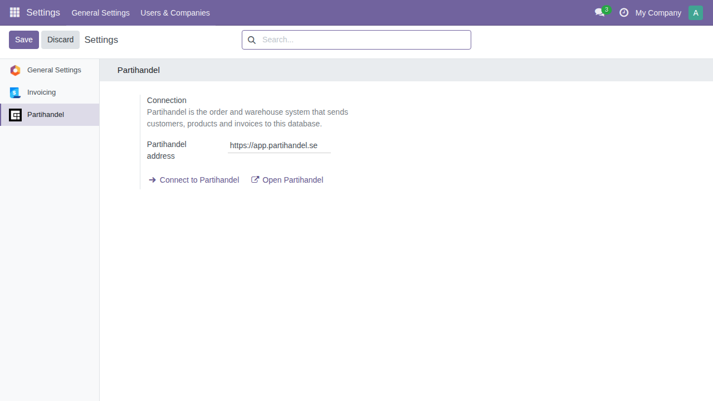
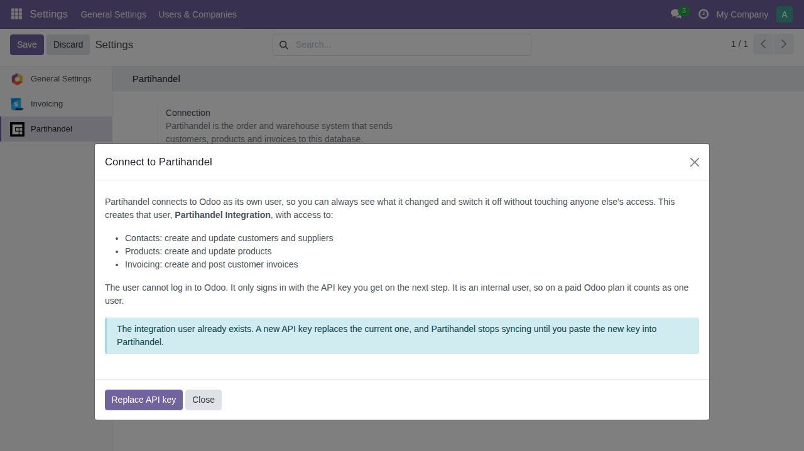
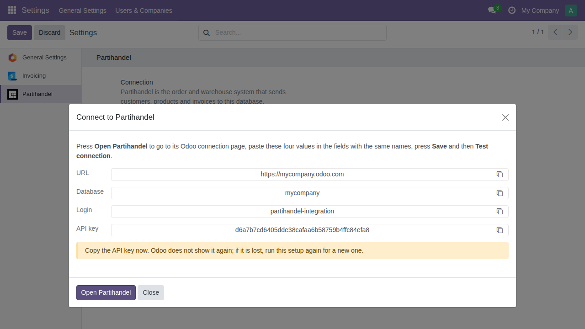

Partihandel runs the daily work of a wholesaler: orders, picking, lots and pallets, purchasing and the B2B webshop. Odoo keeps the books. This module sets up the connection between the two in one step, so customers, suppliers, products and invoices you create in Partihandel show up in Odoo without retyping.
Requires a Partihandel account. The module itself is free.



Questions about the connection: support@partihandel.se